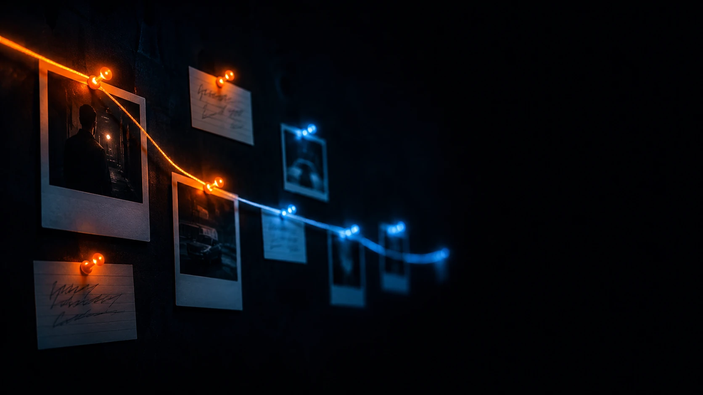

한 세션에서 무한 대화와 무한 코딩을 지원하고, 당신의 어제를 전부 기억하는 컴패니언 에이전트.
JLC no-prefix route active
MEM project state persisted across session
ZERO handoff · switching · onboarding ready
OMM mistake converted into project warning
RUN turn 9,842 · compact 0 · clear 0 · no ceiling

모든 LLM은 턴 사이에 다 까먹는다 — 영화 메멘토의 레너드처럼.
다른 에이전트는 매번 대화 전체를 다시 읽어서 버틴다. 그러다 한계에 다다르면, 여태 기억한 걸 한꺼번에 다 잃는다.
자비스코드는 그냥 메모를 밖에 적어두고 읽는다 — 레너드의 그 메모들처럼. 전부 짊어지지 않고 메모만 들고 다니니, 까먹지도 느려지지도 않는다.
JLC는 그 메모를 늘 또렷하게 유지해주는 하네스다 — 레너드가 엉뚱한 방향으로 빠지지 않게.
JHB는 레너드의 노트입니다 — 매 턴 함께 갑니다. 메시지가 과거로 손을 뻗으면, JLC는 레너드가 일기장을 다시 펼치게 해줍니다: 맞는 원문 페이지를 즉석에서 재구성하죠 — BM25로 좁히고, bge‑m3 코사인으로 다시 정렬해, 상위 몇 개만. 전체 기록을 통째로 넣는 게 아니라. 노트가 이해를 들고 가고, 일기장이 중요할 때 정확한 표현으로 뒷받침합니다. 어떻게 만들었나 →
LLM은 턴과 턴 사이에 아무것도 기억하지 못합니다. 기존 에이전트는 매 턴 대화 전체를 다시 먹여 그 사실을 가립니다 — 자기 본성과 싸우다, 컨텍스트가 차는 순간 무너집니다.
JARVIS CODE는 스테이트리스에 맞춰 설계됐습니다. 본성을 거스르지 않기에 — 길어져도 느려지지 않고, 끝까지 잊지 않습니다.
어제를 다시 설명하는 그 시간, 당신의 가장 귀한 자원이 사라진다.
AI가 잊을 때마다, 그 빈자리를 메우는 건 언제나 당신이다.
똑똑해지라고 만든 AI가, 대화가 길어질수록 멍청해진다.
JARVIS CODE는 어제를 기억한 채, 오늘을 시작한다.
당신의 시간은 이제, 설명이 아니라 창조에 쓰인다.
/compact로 맥락을 압축·손실/clear로 기억을 버림JARVIS LLM Codec(JLC) — 어텐션은 O(n²)라, 대화가 길어질수록 비용이 제곱으로 불어나다 결국 /compact·/clear로 기억을 버립니다. JLC는 기억을 창 밖으로 들고 가, 곡선을 다시 선형으로 꺾습니다.
그것이 잊기에 — 당신은 잊지 않는다.
거대한 대화 prefix를 끌지 않습니다.
대화당 비용이 O(n²)이 아니라 선형(O(n)) — 긴 작업도 비용 폭발 없이 끝까지 갑니다.
기억이 모델이 아니라 코덱에 삽니다.
재시작·모델 교체·더 작은 모델로 내려도 프로젝트 맥락은 그대로 남습니다.
노 컴팩트, 노 클리어. 정보를 상태와 메모리로 분산해 채울 윈도우 자체가 없습니다 — 한 세션에서 무한 대화와 무한 코딩.
일상 대화엔 일반 추론으로.
코딩에선 추론을 끝까지 밀어 LLM의 최고 성능을 뽑아냅니다.
기억을 밖에 들고 가니 — 컨텍스트를 태워 없앨 걱정 없이 깊이 파고듭니다.
200개 파일을 리팩토링하던 3일째. 금요일 밤 노트북을 덮고, 월요일 아침 다시 켭니다. JARVIS CODE는 멈춘 그 자리에서, 당신이 왜 approach X를 버렸는지까지 기억한 채 이어갑니다.
OMM은 한 번 저지른 실수를 스스로 기억합니다.
당신이 일일이 지적하지 않아도 같은 실수는 두 번 반복되지 않고, 같은 프로젝트를 다룰수록 알아서 더 똑똑해집니다.
흉내 낼 수 없는, 진짜 복리입니다.
jarvis-code엔 백엔드가 없습니다. 아무것도 phone-home 하지 않습니다 — 애널리틱스도, 사용량 추적도, 업데이트 핑도 없습니다. 임베딩 모델 자체의 텔레메트리까지 꺼버립니다.
개인 개발자는 프록시 서버를 못 돌립니다 — 그래서 안 돌립니다. 당신의 프로바이더(Anthropic, OpenAI, Ollama…)를 직접 연결하고 벤더에 직접 지불합니다. jarvis-code는 코덱과 메모리 하네스만 제공합니다.
당신의 메모리는 디스크에 평문 JSONL로 있습니다 — 잠긴 바이너리 DB가 아니라. 임베딩은 로컬에서 돕니다(bge-m3). 당신의 코드는 오직 당신이 고른 LLM 프로바이더로만 나갑니다.
첫 설치 때 임베딩 모델(~2.3GB)을 HuggingFace에서 한 번 받습니다. 웹 검색을 켜면 Brave를 씁니다. 그게 전부입니다.
이미 다른 에이전트를 쓰고 있을지 모릅니다. 그것도 처음엔 완벽합니다.
대화가 길어지고 컨텍스트가 꽉 차는 순간, 그것은 당신을 두고 떠납니다.
JARVIS CODE는, 바로 거기서 시작합니다.
🤖 이미 AI 어시스턴트를 쓰고 있나요? Claude Code, Codex, Cursor에게 설치를 통째로 맡기세요 — 지금 쓰는 AI에 맞춰 알아서 세팅해줍니다. 이걸 붙여넣으세요: